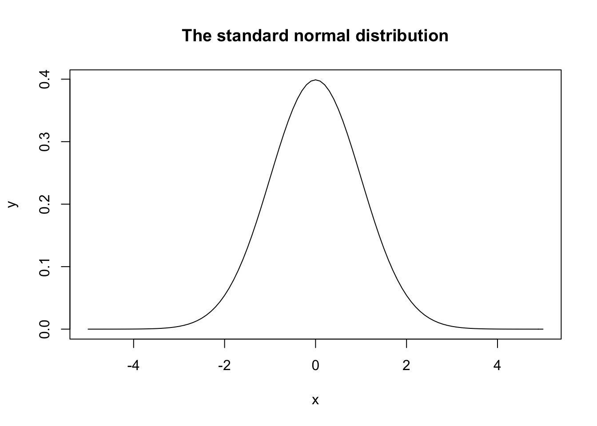
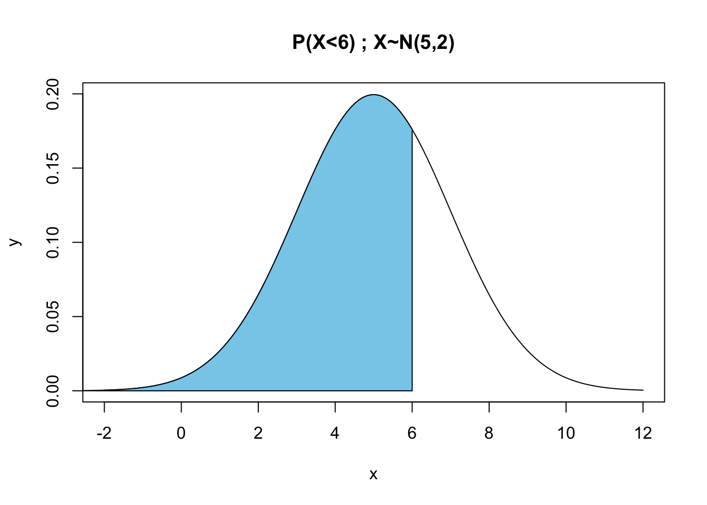
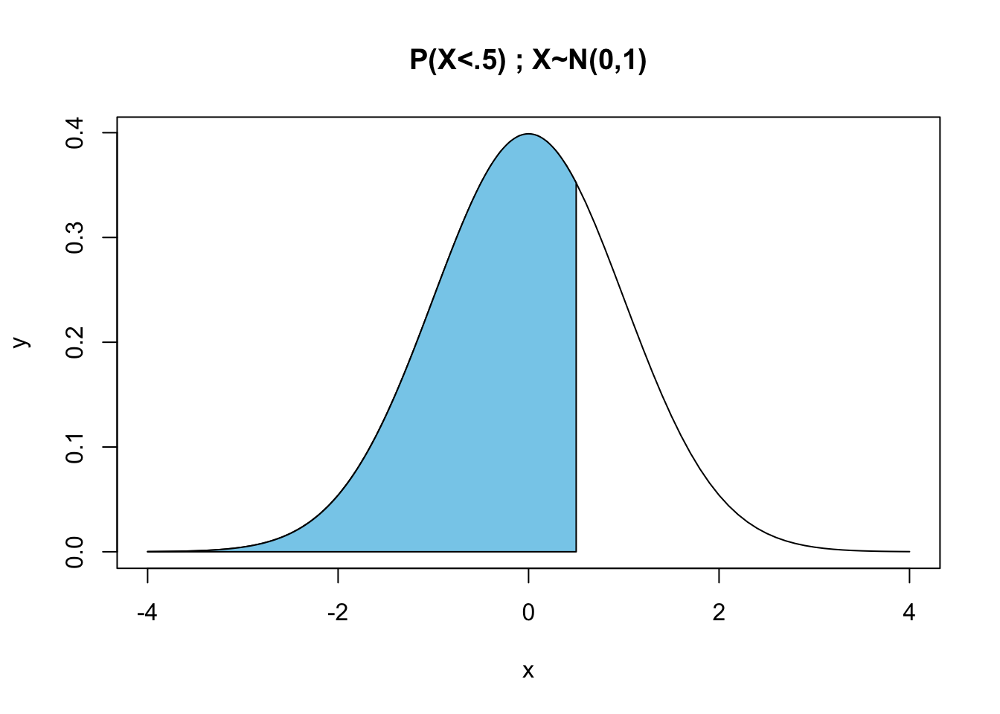
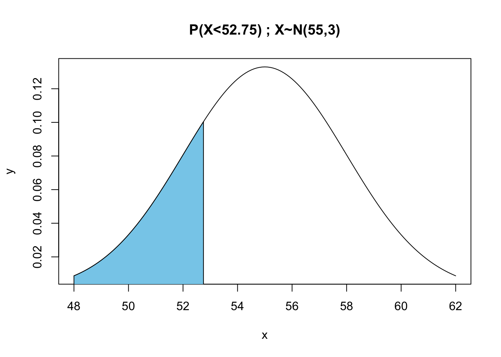
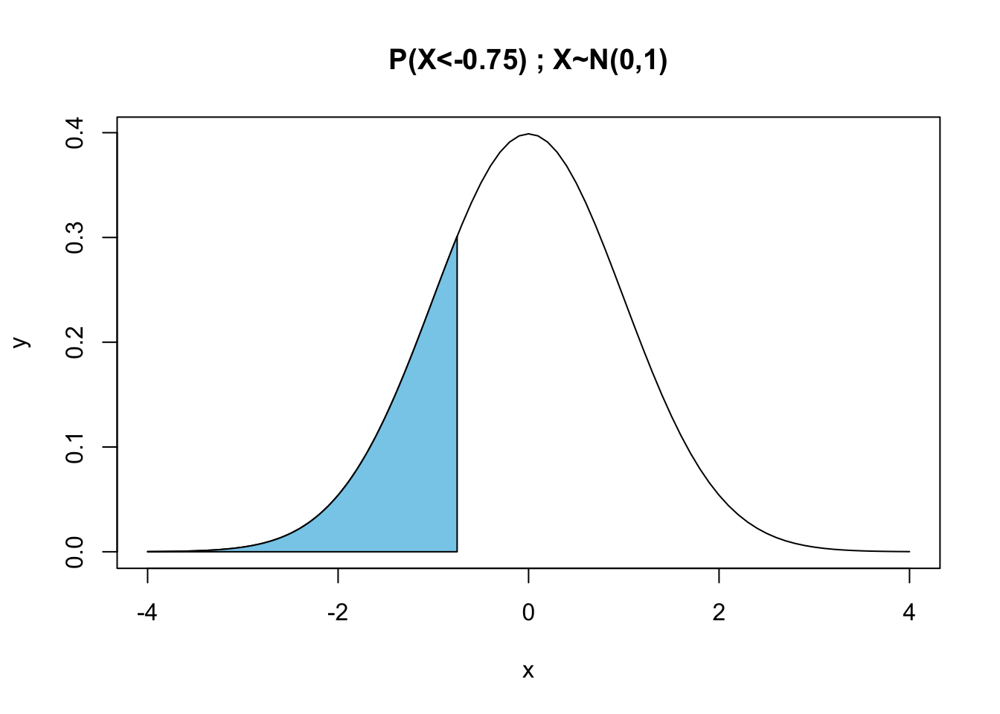
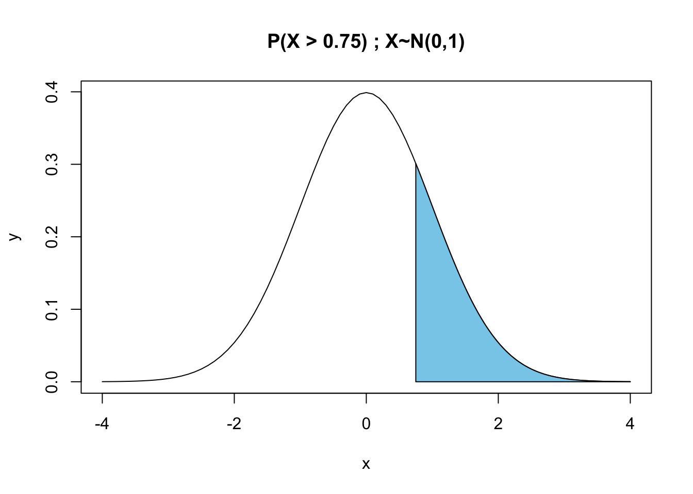
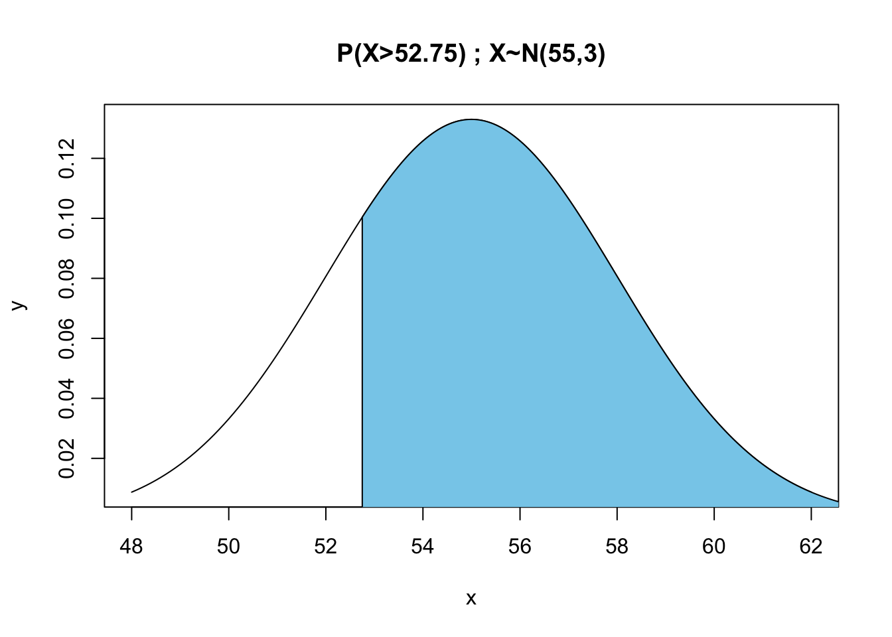

16 Working with the Normal Distribution
Learning Objectives
- Understand the characteristics of a standard normal distribution, and how it relates to any normal distribution.
- Learn how to find the area under the normal curve for any interval.
16.1 The Standard Normal Distribution
The standard normal distribution is a normal distribution with a mean of \(\mu=0\) and a standard deviation of \(\sigma=1\).
NOTE: I am going to provide some examples of how to plot the normal distribution. These are here to provide some examples of how to plot it, but the code itself is not critical for understanding this chapter.
x<-seq(from=-5, to=5, by=.1)
y<-dnorm(x, mean=0, sd=1)
plot(x,y, type="l", main="The standard normal distribution")
Any normal distributions can be transformed to standard normal distributions using the following formula:
\[Z = \frac{x-\mu}{\sigma}.\]
That is, if \(x \sim N(\mu, \sigma)\) and we apply the formula above we will have a new variable \(z\) that corresponds to the standard normal distribution.
16.1.1 Example
The probability \(P(X<x)\) for a normal probability distribution in R is given by the pnorm() function. So assume we have a normal distribution with \(\mu=5\), and \(\sigma=2\) (which means that \(\sigma^2=4\)). The are to the left \(X=6\) for the normal curve is found by coding:
pnorm(6, mean=5, sd=2)## [1] 0.6914625We can look at this visually as the shaded area in the plot below:
x<-seq(from=-2, to=12, by=.1)
y<-dnorm(x, mean=5, sd=2)
plot(x,y, type="l", main="P(X<6) ; X~N(5,2)")
### The code below is for shading in an area under the curve
cord.x <- c(-2,seq(-3,6,0.01),6)
cord.y <- c(0,dnorm(seq(-3,6,0.01), mean=5, sd=2), 0)
polygon(cord.x,cord.y,col='skyblue')
But could get this same number by calculating a new value:
\[Z=\frac{6-5}{2}=0.5\]
We can then look up the probability on the standard normal distribution
pnorm(.5, mean=0, sd=1)## [1] 0.6914625Again we can see this visually by looking at:
x<-seq(from=-4, to=4, by=.1)
y<-dnorm(x, mean=0, sd=1)
plot(x,y, type="l", main="P(X<.5) ; X~N(0,1)")
### The code below is for shading in an area under the curve
cord.x <- c(-4,seq(-4,0.5,0.01),0.5)
cord.y <- c(0,dnorm(seq(-4,0.5,0.01), mean=0, sd=1), 0)
polygon(cord.x,cord.y,col='skyblue')
Since the arguments mean=0 and sd=1 are the default settings for the pnorm function, we can get the same answer by just coding:
pnorm(.5)## [1] 0.691462516.2 Z-scores
A z-score is what we obtain after we apply the above equation. So, for istance, if we are looking at a normal distribution with \(\mu = 2\) and \(\sigma=2\) we can calculate the z-score of the point \(x=4\) as
\[Z = \frac{x-\mu}{\sigma}=\frac{4-2}{2} = 1.\]
A z-score of 1 means that the the point \(x=4\) is on standard deviation above the mean. Likewise, a z-score of 2.4 would mean that \(x\) is 2.4 standard deviations above the mean.
16.3 What’s the point of the z-score?
Once a z score has been calculated, it is very easy to calculate probabilities (areas under the curve) for any normal distribution just using a table for the standard normal distribution.
If a dataset follows a normal distribution, then about 68% of the observations will fall within one standard deviation of the mean, about 95% of the observations will fall within two standard deviations of the mean, and about 99.7% of the observations will fall within 3 standard deviations of the mean.(Remember the empirical rule? If not, go back and review.)
An explanation of an example problem is posted below in the examples section. But first watch this video. It is a bit long, but this is something you really need to be good at for the test. So it is totally worth your time. Click here to see the table we will use in class so you can follow along with the examples. (There are some more examples below).
16.4 Examples
Below are some examples showing how to use the standard normal distribution and the z table in order to solve for probabilities.You should use the Agresti table when you try these example problems. This is what you will be using on the rest of the exams and homeworks for this course-so pay attention.
16.4.1 Example 1: Finding the area to the left, when \(x<\mu\)
For a normal distribution with \(\mu = 55\) and \(\sigma = 3,\) find the probability that an observation falls at or below the value 52.75.
In R we could just type in
pnorm(52.75, mean=55, sd=3)## [1] 0.2266274x<-seq(from=48, to=62, by=.1)
y<-dnorm(x, mean=55, sd=3)
plot(x,y, type="l", main="P(X<52.75) ; X~N(55,3)")
### The code below is for shading in an area under the curve
cord.x <- c(48,seq(48,52.75,0.01),52.75)
cord.y <- c(0,dnorm(seq(48,52.75,0.01) , mean=55, sd=3), 0)
polygon(cord.x,cord.y,col='skyblue')
To find the z-score, plug in the mean and standard deviation into \(Z = (x-\mu)/\sigma\) The variables describing this normal distribution will be converted into a z score that can will used as part of a standard normal distribution \[P(x \le 52.75)=P(z \le (52.75-55)/3))=P(z \le -0.75)\]
x<-seq(from=-4, to=4, by=.1)
y<-dnorm(x, mean=0, sd=1)
plot(x,y, type="l", main="P(X<-0.75) ; X~N(0,1)")
### The code below is for shading in an area under the curve
cord.x <- c(-4,seq(-4,-0.75,0.01),-0.75)
cord.y <- c(0,dnorm(seq(-4,-0.75,0.01), mean=0, sd=1), 0)
polygon(cord.x,cord.y,col='skyblue')
Now, we use our calculated z score in conjunction with the z table above to find our probability. However, the table does not include negative values for z because the table is for the area to the right.
So what should we do? The key is to remember that the standard normal distribution is symmetric around 0. This means that \(P(z \le -0.75)=P(z \ge 0.75)\).
x<-seq(from=-4, to=4, by=.1)
y<-dnorm(x, mean=0, sd=1)
plot(x,y, type="l", main="P(X > 0.75) ; X~N(0,1)")
### The code below is for shading in an area under the curve
cord.x <- c(0.75,seq(0.75, 4,0.01),4)
cord.y <- c(0,dnorm(seq(0.75,4,0.01), mean=0, sd=1), 0)
polygon(cord.x,cord.y,col='skyblue')
Notice the change from “less than” to “greater than.”
Since the distribution is symmetric, we can multiply the equation by -1 to get a value for the side of the table that we want. After doing so, our equation changes from \(P(z \le -0.75)\) to \(P(z \ge 0.75)\). Next we find the z score we just calculated on the corresponding z score table above. The first decimal place holds a 7; the 2nd decimal place holds a 5. When we locate the .7 (row 7 column 1) and then move over to the .05 column, we find the corresponding probability to be about 0.227.
Remember that this probability refers to the area below the curve to the right of the z score we calculated (as shown by the graphic above the table). Lucky for us, this is exactly what the equation tells us to find \((P(z\ge0.75))\). Our answer, therefore, for \(P(x \le 52.75)\) = 0.227.
16.4.2 Example 2: Finding the area to the right when \(x \le \mu\).
For a normal distribution with \(\mu = 55\) and \(\sigma = 3\), find the probability that an observation falls at or above the value of 52.75.
In R we could just type in
pnorm(52.75, mean=55, sd=3, lower.tail=FALSE)## [1] 0.7733726Noe that we had to use the lower.tail=FALSE argument, which means we want to measure the area under the curve to the right.
This corresponds to the following plot:
x<-seq(from=48, to=62, by=.1)
y<-dnorm(x, mean=55, sd=3)
plot(x,y, type="l", main="P(X>52.75) ; X~N(55,3)")
### The code below is for shading in an area under the curve
cord.x <- c(52.75,seq(52.75,63,0.01), 63)
cord.y <- c(0,dnorm(seq(52.75,63,0.01) , mean=55, sd=3), 0)
polygon(cord.x,cord.y,col='skyblue')
To find the z-score, plug in the mean and standard deviation into \(Z = (x-\mu)/\sigma\). The variables describing this normal distribution can be converted into a z score that can be used as part of a standard normal distribution
\[P(x \ge 52.75) = P(z\ge(52.75-55)/3)) = P(z \ge -0.75)\] We are looking for an area to the right, just like the table expects, but there are no negative values on our table, so what should we do?
Again, we have to alter our equation so that we have a can use our z score in conjunction with the z table. The key is to realize that \(P(z\ge-0.75) = 1-P(z\le-0.75)\). This is true because the total area under the normal curve always sums to 1. So, for any point x, the area to the right is always one minus the area to the left. If this doesn’t make sense, draw yourself a picture.
So to complete this problem, all we need to do is find \(P(z\le -0.75)\). But this is exactly what we found in the last problem! So we find the area to the right of positive 0.75 just like before, which is 0.227. The probability value we find is the same as the above value: 0.227. However, note that this value designates the probability to the right of the z score-and we want probability to the left of the z score. In this case, we take (1-) the probability to the right of the z score to get the probability to the left of the z score. So 1 - 0.227 gives us our answer: 0.773.
16.4.3 Example 3: Finding the point given an area
For a normal distribution with \(\mu = 55\) and \(\sigma = 3\), I want to find the point where the area under the curve to the right is equal to 0.0985.
In R, we can use the qnorm() function like this:
qnorm(0.0985, mean=55, sd=3, lower.tail=FALSE)## [1] 58.87044Note again we used the lower.tail=FALSE argument because we are looking for the area to the right.
But what if you don’t have R? Don’t panic. The first thing to realize is that this is basically just an algebra problem. You are pretty good at Algebra, right? First, set up the equation based on the formulas below.
\[P(Z>\frac{x-\mu}{\sigma})=0.0985 \rightarrow P(Z>\frac{x-55}{3})=0.0985\] So this looks bad. It looks like there is only one equation above, but there are two unknowns, \(Z\) and \(x\). The trick is to realize that we can use the table to find the correct value of \(Z\).
For these kinds of problems, we just need to look around the Z-table until we find a value that is as close as possible to 0.0985. Somtimes, you will have to guesstimate when the exact number you are looking for isn’t there. In this case, the number is right there in the row that starts with 1.2 in the column labled .09. This means that the z-value we plug into the equation above is 1.29!
\[P(1.29>\frac{x-55}{3})=0.0985\]
In fact, now that we have found the value of \(z\), we don’t even need most of this formula. All we need to do is solve the equation below for \(x\).
\[1.29 =\frac{x-55}{3}\]
So, after a few easy steps with algebra, we see that
\[3\times1.29=x-55\] \[3\times1.29+55=x\]
\[x=58.87.\]